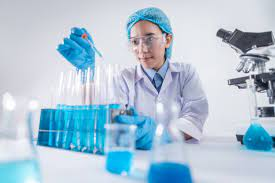

Why Super Minds Teaches Lab?
Science is the study of facts and the way we interact with the world. Learning about the scientific method teaches children how to ask questions and gather the evidence needed for the most complete answer. Comprehensive science education lets students learn how to develop ideas, discover the world around them, and ask challenging questions about our place in that world.
In most educational philosophies, learning about science simply isn’t enough. To fully understand the experiential nature of science, students need the space to do their own experiments, learn how to conduct research, and practice scientific learning through trial and error.
<

Labs provide students with various opportunities to learn and experiment, which plays a crucial role in the ongoing intellectual development of students at any academic level. Science labs give students the time, space, and resources to explore and experiment.
Late Elementary Science Lab Learning
Students in grades 3-5 are just as curious as early elementary students but are better equipped to ask more articulate questions about their world. They are interested in exploring the relationships between living things and their environments, which means that new biological concepts like metamorphosis and the life cycle will start to resonate with them.
Middle School Science Lab Learning
By middle school, students will be much more comfortable with the idea of transitioning learning spaces and instructors, so at this stage, it becomes much more feasible and enjoyable to have a separate classroom as a dedicated science lab space. Doing experiments in a science lab fosters independent learning, as well as interdependence and peer learning through working with lab partners.